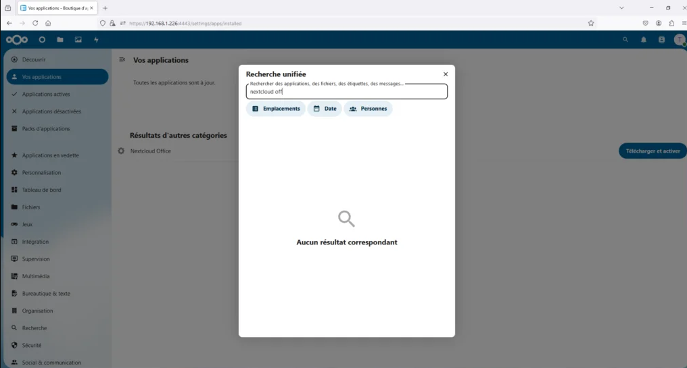
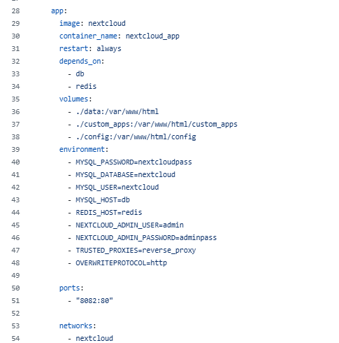
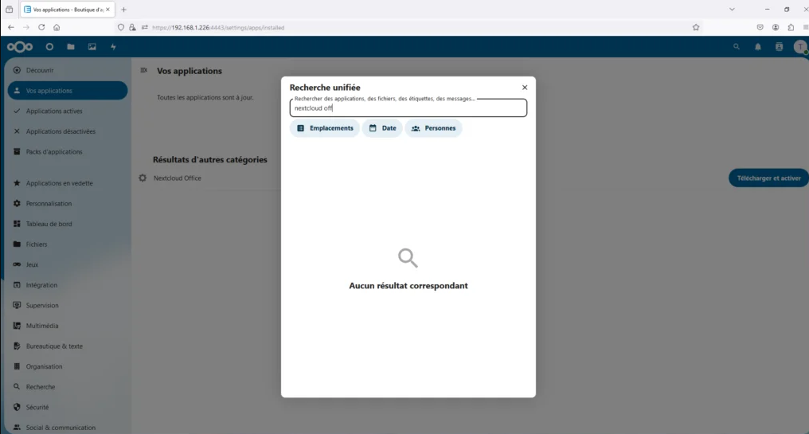
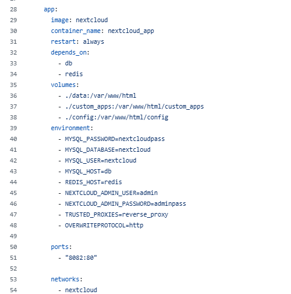

Nextcloud – Espace de collaboration (Docker)
 



Nextcloud : Collaboration & fichiers
Déploiement de Nextcloud sous Docker (Apache) avec MariaDB et Redis pour offrir un espace de stockage, partage et collaboration conforme RGPD. Persistance data/config/apps, optimisations APCu/Redis, sauvegardes et préparation à l’exposition via reverse proxy.
- Catégorie : Collaboration / Fichiers
- Contexte : VM Debian 12 (pilote DSI)
- Livrables : compose, config persistance, scripts backup, doc
La collectivité souhaite centraliser stockage, partage et collaboration (fichiers, calendriers, contacts) pour réduire les partages réseau hétérogènes et les e-mails lourds. Exigences : auto-hébergé, RGPD, web/mobile, extensible.
- Pilote pour 30–50 comptes (1–2 directions)
- Stack simple & reproductible (Docker Compose)
- Persistance data/config/apps & performances (APCu/Redis)
- Préparer la montée en charge (reverse proxy, sauvegardes, supervision)
- app :
nextcloud:stable-apache(Apache inclus) - db :
mariadb:lts - redis :
redis:alpine
Volumes persistants : ./data → /var/www/html/data, ./config → /var/www/html/config, ./custom_apps → /var/www/html/custom_apps, ./db → /var/lib/mysql.
version: '3.8'
services:
db:
image: mariadb:lts
container_name: nextcloud_db
restart: always
environment:
MYSQL_ROOT_PASSWORD: rootpass
MYSQL_PASSWORD: nextcloudpass
MYSQL_DATABASE: nextcloud
MYSQL_USER: nextcloud
volumes:
- ./db:/var/lib/mysql
networks: [nextcloud]
redis:
image: redis:alpine
container_name: nextcloud_redis
restart: always
networks: [nextcloud]
app:
image: nextcloud:stable-apache
container_name: nextcloud_app
restart: always
depends_on: [db, redis]
environment:
MYSQL_HOST: db
MYSQL_DATABASE: nextcloud
MYSQL_USER: nextcloud
MYSQL_PASSWORD: nextcloudpass
REDIS_HOST: redis
NEXTCLOUD_ADMIN_USER: admin
NEXTCLOUD_ADMIN_PASSWORD: adminpass
# Garder uniquement si un reverse proxy nommé "reverse_proxy" est présent
TRUSTED_PROXIES: reverse_proxy
OVERWRITEPROTOCOL: http
volumes:
- ./data:/var/www/html/data
- ./config:/var/www/html/config
- ./custom_apps:/var/www/html/custom_apps
ports:
- "8082:80"
networks: [nextcloud]
networks:
nextcloud:🔎 Correction clé : monter /var/www/html/data (et non tout /var/www/html), sinon tu écrases le core Nextcloud.
- Prérequis : VM Debian 12, Docker + Compose, DNS/FQDN interne si besoin.
- Arbo Git :
docker-compose.yml,config/,custom_apps/,data/,db/,backups/. - Lancement :
docker compose up -d→ accèshttp://IP_VM:8082(admin auto si variables définies). - Optimisations : APCu + Redis + cron.
// config/apcu.config.php
<?php
$CONFIG['memcache.local'] = '\\OC\\Memcache\\APCu';// config/redis.config.php
<?php
$CONFIG['memcache.locking'] = '\\OC\\Memcache\\Redis';
$CONFIG['redis'] = ['host' => 'redis', 'port' => 6379];// config/config.php (extraits)
<?php
$CONFIG = [
'trusted_domains' => ['localhost','10.0.0.10','cloud.collectivite.local'],
'overwrite.cli.url' => 'http://cloud.collectivite.local',
'default_phone_region' => 'FR',
];# Cron Nextcloud (toutes les 5 min)
*/5 * * * * docker compose exec -u www-data nextcloud_app php -f cron.php >/dev/null 2>&1- Pilote interne : accès LAN, secrets forts, sauvegardes basiques.
- Pré-prod/Prod : reverse proxy (Traefik/NPM/Caddy) + TLS Let’s Encrypt,
TRUSTED_PROXIES(IP/CIDR) &OVERWRITEPROTOCOL=https, headers de sécurité, fail2ban, politique d’apps (liste blanche), quotas & 2FA.
#!/usr/bin/env bash
set -euo pipefail
STAMP=$(date +%F_%H%M)
mkdir -p backups
mysqldump -u nextcloud -pnextcloudpass -h 127.0.0.1 nextcloud > backups/db_${STAMP}.sql
tar -czf backups/config_${STAMP}.tar.gz config/
tar -czf backups/data_${STAMP}.tar.gz data/
find backups -type f -mtime +14 -delete
echo "Backup OK -> ${STAMP}"Restauration : docker compose down → restaurer db SQL, config/, data/ → docker compose up -d → vérifier logs, occ maintenance:mode --off si nécessaire.
- Plateforme unique de partage & collaboration
- Moins d’e-mails lourds, liens sécurisés
- Accès multi-devices (web/bureau/mobile)
- Base solide pour montée en charge et ouverture sécurisée
Bilan personnel
- Déploiement Nextcloud (Apache) + MariaDB LTS + Redis en Docker
- Persistances propres (
data/,config/,custom_apps/,db/) - Optimisations clés (APCu, Redis, cron) & paliers de sécurité
- Projet industrializable et réutilisable pour d’autres services